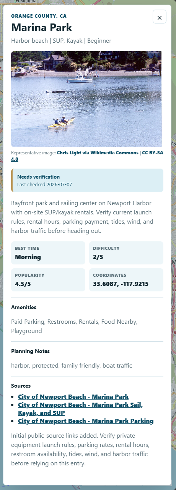

What you can review
The detail panel can include the fuller description, planning fields, representative photo information, source links, water-body context, and verification notes.

Planning guidance, not guarantees
Fields such as best general time, skill level, difficulty, and popularity are comparative planning guidance. They do not replace current conditions, official access information, or personal judgment.
Follow the source and verification cues
If a material detail is marked Needs Verification, confirm it through a current reliable or official source before relying on it.